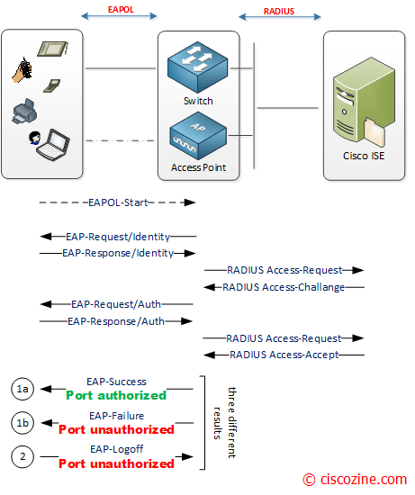
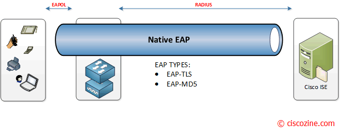
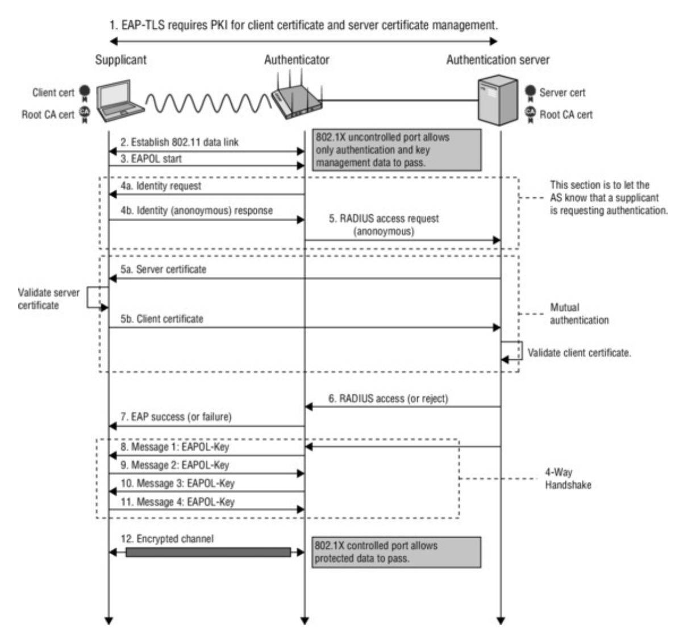
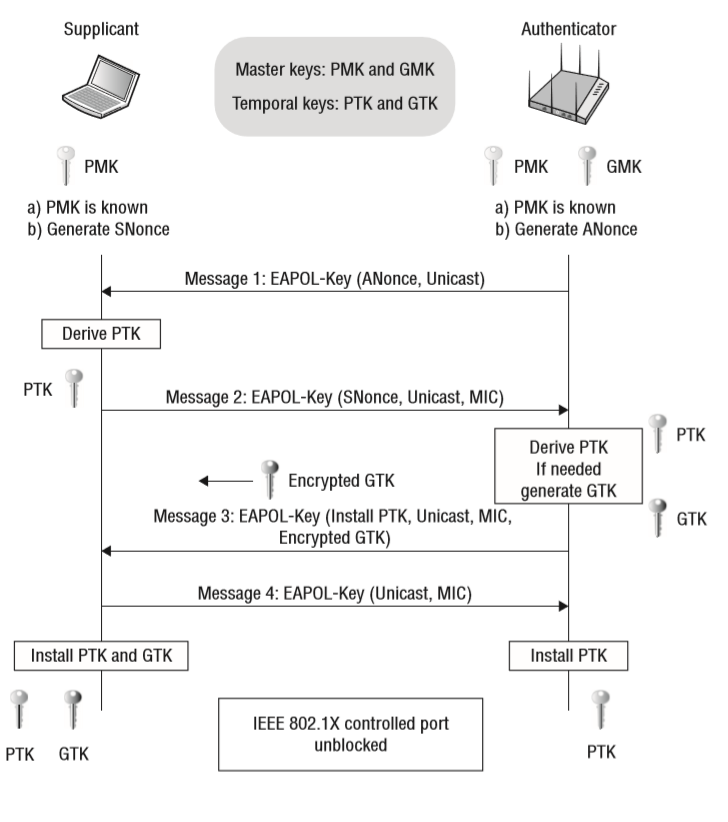
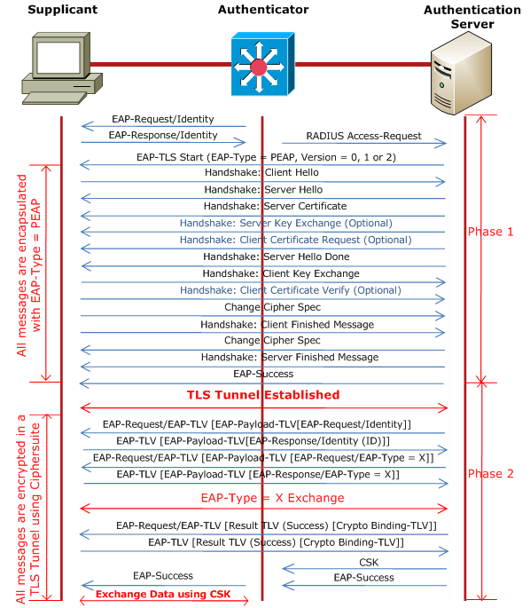

EAP is a standardized framework for authentication methods:
EAP is a standardized framework that allows various authentication methods (e.g., EAP-TLS, EAP-PEAP, etc.)
to be used for secure network access.
It is not a authentication method. Different authentication methods can be used within the EAP framework.
EAP is designed as a Layer 2 protocol.
It’s meant for use in environments where IP and TCP are not yet established, like in PPP or 802.1X.
It does not define ports, sessions, or sequencing like TCP does. But EAP Can Be Carried Over TCP
(Indirectly as in RADIUS packets)
EAP is a Layer 2 protocol (Data Link Layer) used to negotiate and carry authentication data, but it
doesn’t deliver general-purpose data like TCP/UDP does
EAP is not a transport protocol. It defines how to carry authentication messages, but not the transport
mechanism. EAP is flexible to run on top a variety of protocol layers including:
PPP
802.1X - for Wireless Lans and Ethernet
RADIUS
EAP is commonly used with the IEEE 802.1X standard.
EAP always runs on top of 802.1X in Ethernet (and Wi-Fi) networks.
EAP Types
EAP Types are specific authentication methods that operate within the Extensible Authentication Protocol (EAP)
framework. EAP is a container or transport framework that supports multiple types of authentication, each
defined as a "type."
EAP-FAST (EAP-Flexible Authentication via Secure Tunneling)
EAP-MD5 (EAP-Message Digest 5)
Cisco LEAP (Lightweight EAP)
And many more as defined in https://www.iana.org/assignments/eap-numbers/eap-numbers.xhtml .
EAP Over PPP
Used in: Dial-up, DSL, VPNs (like L2TP, PPTP).
Link-layer transport : PPP
EAP was originally designed for point-to-point links like PPP (Point-to-Point Protocol), used in dial-up
networks.
PPP can use EAP for authentication as one of the options. When used together, PPP handles the connection and
link-level aspects, while EAP handles the authentication process
Two devices establish a PPP connection
During the authentication phase, PPP uses EAP
EAP over PPP does not use 802.1X
The EAP messages are exchanged directly between the client and the server over PPP — no 802.1X involved
EAP over 802.1X
Used in: Wired Ethernet (port-based access) and Wi-Fi (WPA2/3-Enterprise)
Link-layer transport : EAPoL (EAP over LAN)
EAP is carried using EAP over LAN (EAPoL), defined by IEEE 802.1X
In Ethernet networks, like Ethernet LANs and Wi-Fi, there's no PPP. So you need a way to encapsulate and
carry EAP messages between the client (supplicant) and the network access device (authenticator). That's
what EAPOL does — it's the transport protocol that allows EAP to work over Layer 2 (Ethernet) networks.
802.1X is an IEEE standard for port-based network access control (PNAC)
It provides a framework for authenticating and authorizing devices to access a network
Until the client is authenticated, IEEE 802.1X access control allows only EAPoL and Spanning Tree Protocol
(STP) traffic through the port to which the client is connected
After authentication is successful, normal traffic can pass through the port
The IEEE 802.1X standard was first designed for use in wired Ethernet networks
802.1X provides the infrastructure (port-based control) for using EAP to authenticate devices
802.1X Components:
Supplicant - Client Application
Authenticator - Access point/switch
Authentication Sever - RADIUS server. This is connected to an Identity provider (LDAP server)
Connection Attempt : The supplicant connects to the network. The authenticator detects it and blocks
regular traffic until authentication succeeds. Only EAPOL Traffic is allowed.
EAPOL Exchange : The authenticator sends an EAP-Request/Identity packet via EAPOL. The supplicant
replies with EAP-Response/Identity (its username or identity). The authenticator forwards this to the
authentication server via RADIUS
EAP Method Negotiation and Challenge : The authentication server chooses an EAP method (e.g., EAP-TLS,
PEAP). challenge/response exchange begins depending on the method. This could be based on username/password,
Certificate, MSCHAPv2 etc.
Authentication Result : If successful, the server sends an EAP-Success. If failed, it sends
EAP-Failure. The authenticator lets the client through (or not), based on the result
Network Access Grant: Once authenticated, the authenticator opens the port for normal data traffic.

802.1X (credit www.ciscozine.com).
Once authenticated and port access is granted, data transmitted over the network can be encrypted by the
Authenticator with WPA2/WPA3 to ensure confidentiality and integrity. When the supplicant wants to log off, an
EAPOL-Logoff message can be sent to unauthorize the port.
Tunneled EAP types first create a secure encrypted tunnel (usually via TLS) before exchanging
credentials
E.g.,
EAP-TLS
Tunnel Method : TLS (X.509 certs)
Inner Auth : None (auth via mutual certificates)
Both sides use certificates
EAP-PEAP
Tunnel Method : TLS
Inner Auth : Usually MS-CHAPv2
Common in enterprise Wi-Fi
EAP-TTLS
Tunnel Method : TLS
Inner Auth : PAP, CHAP, MS-CHAPv2, etc
Flexible for legacy systems
EAP-FAST
Tunnel Method : TLS (via PAC)
Inner Auth : MS-CHAPv2, etc
Cisco-specific, fast reconnects
EAP-TEAP
Tunnel Method : TLS
Inner Auth : Username/password or certs
Modern successor to PEAP/TTLS
Non-Tunnelled (Native EAP)

Non Tunneled EAP(credit www.ciscozine.com).
Non-tunneled EAP types exchange credentials in plaintext or weakly obfuscated form, with no tunnel —
making them insecure by today’s standards
These should never be used over unencrypted networks. Always tunnel them via EAP-PEAP, EAP-TTLS, or
similar
E.g.
EAP-MD5
Tunnel: No
Secure: Weak
Passwords sent in challenge-response, vulnerable to replay attacks
EAP-MSCHAPv1
Tunnel: No
Secure: Broken
Totally insecure, deprecated
EAP-MSCHAPv2
Tunnel: No
Secure: Weak (unless tunneled)
It is recommended to tunnel it with PEAP, as it is weak on its own
EAP-LEAP
Tunnel: No
Secure: Broken
Cisco proprietary, vulnerable to dictionary attacks
802.1X Phases for wireless secure communication
Phase1 - Network discovery
scan the network
Phase2 - Open authentication & Association
802.11 open authentication and association
Phase3 - 802.1X authentication
The wireless device and the access point may ignore this third phase if both of them have pre-Shared Key
(PSK) or cashed PMK used in re-association
Derive PMK using 802.1x - After a successful EAP authentication in a WPA3-Enterprise network, the AP will
generate a PMK (Pairwise Master Key) based on the EAP authentication process.
EAP method produces a Master Session Key (MSK) in authentication server, and sent to Authenticator
Authenticator uses MSK to derive transient keys which protects actual communication
Phase4 - 4 way handshake
AP initiate a 4-way handshake with the station (STA) to establish a secure channel
The wireless device may request to run the 4-way handshake protocol or the access point may start by
itself and both have the same PMK before running the 4-way handshake protocol
Phase5 - Group key handshake
The access point is able to generate the GTK and multicast to the wireless devices in this phase. When the
GTK has been distributed in the previous phase the group key handshake phase will be unnecessary. The GTK
distribution may be repeated multiple times from the same access point
Phase6 - Secure communication
After all necessary phases are achieved successfully, the wireless device can connect with access point
using fresh PTK or GTK to protect data packets
4-way handshake with EAPOL
The 802.11 4-Way Handshake was officially introduced with the WPA standard in 2003, and later fully
standardized in IEEE 802.11i in 2004. Before that 4-Way Handshake was not involved as WEP was used.
IEEE 802.11i enhances IEEE 802.11-1999 by providing a Robust Security Network (RSN) with two new protocols:
4-Way Handshake
Group Key Handshake
4 Way handshake is NOT inolved in following cases:
1. Open WiFi Networks - No 4-way handshake is needed, because there are no encryption keys to negotiate
2. Captive Portal Networks - Initially, they operate as an open network (no encryption), so no 4-way
handshake occurs at that point. Any authentication is done at the application layer.
3. WEP (Wired Equivalent Privacy) - WEP predates WPA/WPA2, and it uses static keys and RC4 encryption
mechanism for key exchange instead of 4-way handshake.
4. Management/Control Frames Before Association - Before a client associates (e.g., in probe requests,
beacons, etc.), the 4-way handshake is not triggered. It only happens after association and authentication
(in WPA/WPA2/WPA3 networks).
4-way handshake starts after the EAP success phase of 802.1X. It generates encryption keys for actual data.
4-way handshake Result - Control port unlocked: Once the 4-way handshake is completed successfully virtual
control port which blocks all the traffic will be open and now encrypted traffic can flow

4 Way Handshake (credit https://wirelessgnan.wordpress.com).
MSK Derivation
The MSK is an EAP concept. It is not used with PSK (WPA2-Personal).
WPA2-Enterprise (EAP): Key derivation is from MSK
WPA2-Personal (PSK): Key derivation is from PSK
Each user gets unique MSK with WPA2-Enterprise (EAP)
MSK is derived prior to 4-way handshake
The EAP Server (usually a RADIUS server) generates the MSK during the EAP authentication process.
It is a 512-bit key derived from the EAP method (e.g., LEAP, PEAP, TLS, etc.) prior to 4-Way Handshake.
This MSK is delivered to:
The client (supplicant)
The authenticator (e.g., Access Point) via the RADIUS server
EAP methods that support MSK:
Only EAP methods that support key derivation can provide an MSK.

4 Way Handshake and Keys (credit www.wifi-professionals.com).
802.1X example with PEAP

PEAP (credit www.thenetworkdna.com).
PEAP Phase 1 - Creates a TLS-encrypted tunnel
Unlike regular EAP where the Client replies with an EAP-Response/Identity message, in PEAP, the Client can
reply with an anonymous identity, for example user@anonymous.com. The Client's real identity is sent in
Phase 2.
The AP (authenticator) just relays the messages — it doesn’t participate in TLS
PEAP Phase 2 - Performs user authentication inside the tunnel
Client sends credetials using EAP-MSCHAPv2 or other inner methods
Master Session Key (MSK) is derived and passed to the AP. The client and AP use this MSK in a 4-Way
Handshake to generate encryption keys
WiFi Standards evolution
IEEE 802.11-1999
IEEE 802.11-1999 is the base version of the Wi-Fi standard. It combined earlier drafts and amendments into
a single published standard
It defined basic Wi-Fi operation (MAC & PHY)
The standard included WEP (Wired Equivalent Privacy) as its security mechanism
Speed: 1–2 Mbps
Frequency: 2.4 GHz
Modulation: FHSS or DSSS
802.11b (1999)
First Commercial Success
Speed: Up to 11 Mbps
Frequency: 2.4 GHz
Still used WEP (insecure)
802.11a (1999)
Speed: Up to 54 Mbps
Frequency: 5 GHz
Modulation: OFDM
Not compatible with 802.11b devices
Mostly used in enterprise settings
802.11g (2003)
Speed: Up to 54 Mbps
Frequency: 2.4 GHz
Backward compatible with 802.11b
Mixed benefits of "a" and "b"
WEP, or WPA (later WPA2 after 2004) (insecure)
802.11n (2009) – Wi-Fi 4
Speed: Up to 600 Mbps
Frequencies: 2.4 GHz and 5 GHz (dual-band)
Introduced MIMO
More reliable signals and range
802.11ac (2013) – Wi-Fi 5
Speed: Up to ~3.5 Gbps
Frequency: 5 GHz only
Introduced MU-MIMO, beamforming
Great for HD streaming, gaming, video conferencing
Ideal for VR, AR, 8K streaming, ultra-low latency apps
Security Evolution Alongside
WEP (Wired Equivalent Privacy) – 1997–2004
Introduced in: 802.11-1997
Authentication: Open System or Shared Key
Used RC4 stream cipher for encryption
Vulnerable to replay attacks, key recovery, and IV collisions
Deprecated – No longer secure or allowed in modern networks
WPA (Wi-Fi Protected Access) – 2003–2006
Introduced by: Wi-Fi Alliance as a stopgap fix for WEP
Still used RC4, but with TKIP (Temporal Key Integrity Protocol).
Introduced 802.1X and Per-Packet Keying
Added the Message Integrity Check (MIC).
Stronger authentication via 802.1X in WPA-Enterprise
Vulnerable to certain attacks (e.g., Michael MIC weakness).
WPA2 (Wi-Fi Protected Access II) – 2004–2021
802.11i is the foundation for WPA2
802.11i is an IEEE specification that defines the security enhancements for Wi-Fi, including WPA2
WPA2 is a security certification standard from the Wi-Fi Alliance that implements security features
based on 802.11i. WPA2 is a certification from the Wi-Fi Alliance based on the 802.11i security
framework. It is not a standard itself, but rather a branding of Wi-Fi networks that meet the 802.11i
requirements
802.11i RSN (Robust Security Network) refers to the framework introduced in the 802.11i amendment for
secure Wi-Fi networks. It ensures networks:
Use AES encryption
Avoid WEP/TKIP
Use modern authentication (PSK or 802.1X)
Perform the 4-Way Handshake
802.11i is the rulebook. RSN is one of the outcomes or modes defined in that rulebook
When a device connects to a WPA2/WPA3 network, it’s joining an RSN as defined by 802.11i
Replaced TKIP with AES-CCMP (block cipher).
Introduced the 4-Way Handshake to derive dynamic session keys
Optional PMF (Protected Management Frames via 802.11w)
Vulnerable to KRACK (Key Reinstallation Attacks) if devices don’t properly implement the 4-way handshake
PSK brute-force possible with weak passwords
WPA3 – Modern Standard (2018–present)
Published by: Wi-Fi Alliance
Replaces WPA2-Personal with SAE (Simultaneous Authentication of Equals).
Replaces PSK with password-authenticated key exchange (resists offline brute force).